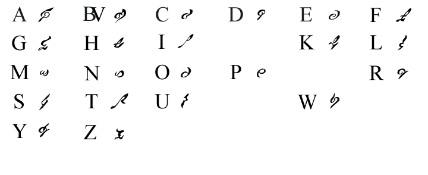
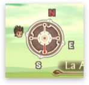

Sobre la traducción
Notas y
curiosidades
Tabla de contenidos
Cifras y letras
El grueso de texto de Tales of the Abyss se divide en tres partes fundamentales: las skits, el diario y el script del juego.
En el juego aparecen aproximadamente 540 skits o conversaciones opcionales, y cada una de ellas tiene entre diez y quince bloques de texto, que a su vez suelen ser una o dos frases. Aparecen a lo largo del juego en determinados puntos, y no es obligatorio verlas. Sólo esto ya tiene más texto que el script principal del Final Fantasy VII.
El diario es un registro de todo lo que ocurre en el juego, y es muy útil para seguir el hilo del juego cuando se ha pasado unos días sin jugar. Tiene numerosísimas habitaciones, y lo que es más, cada una de ellas es larga de cojones, para ser lo que es.
El script del juego son todos los diálogos, todas las escenas y todo lo que te dicen los personajes no jugables a lo largo del juego. Es gigantesco, con más de 22.700 bloques de texto. De hecho, una de las habitaciones tuvo que dividirse en cincuenta de 200 bloques, porque no había manera humana de editar aquello.
En total, nuestra traducción tiene poco más de 340.000 palabras, divididas entre el script, el diario, las skits, nombres de enemigos, de técnicas, de objetos (600 con sus descripciones), de lugares, mensajes en pantalla, menús, etc. Para comparar, El Quijote tiene 41.000 palabras más, y Los Hermanos Karamázov 40.000 menos.
This is madness!
Comparando la cantidad de textos del juego en inglés con la cantidad de texto de otros RPGs míticos, la gráfica vendría a ser:
No hemos sido capaces de encontrar en internet el script completo del Final Fantasy VII, VIII y otros RPGs que nos hubiera gustado meter en la comparación. Si tienes el script extraído de algún RPG, y quieres que lo incluyamos en la gráfica, escríbenos y lo haremos encantados, ya sea un juego moderno o un clásico.
Calendario de Auldrant
Tales of the Abyss tiene su propio calendario: el calendario de Auldrant.
Hemos creado un conversor entre calendario gregoriano y calendario de Auldrant, en javascript. Puedes ver su funcionamiento echando un ojo al código fuente de la página.
Gracias a Nanami por su aporte en el foro. Referencias: Wiki de Aselia, Loldrant (I), Loldrant (II)
Calendario de Auldrant
| Entrada: | |
| Día: | |
| Mes: | |
| Auldrant: | |
| Tierra: | |
Animaciones de zona
Al entrar en una zona nueva del juego, en Tales of the Abyss aparece una pequeña animación sobreimpresionada con el nombre del lugar. Esas animaciones aparecen poco pero son muy llamativas, y a pesar de que han sido una de las ediciones gráficas más tocapelotas, al final conseguimos traducirlas.
Para poder verlas y hacer modificaciones sin tener que hacer pruebas con el propio juego (es decir, parchear de nuevo el juego, probarlo en el emulador, etc.), creamos un simulador en Flash. Inicialmente era de lectura y escritura, y se podían modificar las animaciones en el propio editor, pero ahora mismo también se pueden modificar, aunque los cambios no se guardan.
Para aprovechar esto, hicimos un script que generaba las imágenes y los recortes, y los timeaba basándose en las animaciones originales. Fue mucho curro, pero valió la pena.
Si quieres toquetear el simulador, está aquí: simulador de animaciones de zona.
Lenguaje fónico
Al igual que Tales of Eternia, Tales of the Abyss tiene su propio idioma. El idioma está compuesto por glifos fónicos, y cada uno se corresponde con un caracter occidental (por lo que realmente no es un idioma como tal, sino un juego de caracteres que se utiliza sobre palabras en inglés).
Los textos fónicos que aparecen en el juego, en el logo y en fondo de esta página están escritos usando estos glifos. Como decimos antes, la mayoría están escritos en inglés aunque en algunos casos se utiliza la transcripción fonética que hacen los japoneses de algunas palabras inglesas, una especie de "engrish". Como consecuencia, se pueden ver algunas palabras extrañas escritas en el lenguaje fónico.

Versión vectorizada en PSD. Para Photoshop CS3 o superior.
Residuos
En Tales of the Abyss quedan numerosos residuos de otras versiones, traducciones y juegos anteriores. En la versión japonesa dejaron el animatic del opening entre los archivos del juego, aunque hace falta abrirlo para verlo ya que no se puede acceder a él desde el propio juego.
Además de eso, en el juego hay cosas que están en los archivos, pero no se llegan a usar. Habilidades, objetos, imágenes... Hay incluso residuos del Tales of Symponia, ya que emplearon el port de PS2 del Tales of Symphonia como base para programar el Abyss. Hay alguna skit del TOS, y alguna imagen suelta por ahí.

WAT
Además...
- Al margen del juego y su manual (y la guía de sidequests de esta misma página), hemos traducido el artículo sobre Tales of the Abyss de la Wikipedia inglesa para ponerlo en la española. No podía ser que hubiera semejante basura de artículo para un juego tan molón.
- En la traducción han participado cinco chicos, cuatro chicas y un mono tití.
- Hemos tardado alrededor de un año y medio en terminar la traducción, lo que viene a ser un trillón de horas, ¡o menos!
- La aplicación online que utilizamos para traducir entre varios y desde cualquier ordenador se llama ACME. La hemos hecho nosotros, y es posible que pronto la liberemos.
- Tuvimos que separar la habitación ésa en 50 de 200 bloques, entre otras cosas porque no había navegador en este mundo capaz de manejar semejante montonazo de bloques. ACME moría.
- La traducción del script principal la hacíamos a ciegas. No teníamos el nombre de quien hablaba en los diálogos, por lo que tuvimos que tirar de la memoria y del testeo. Lo mejor de todo es que aunque parece una putada, en la mayoría de traducciones oficiales están en las mismas (y por eso se tienen que realizar exhaustivísimos testeos).
- La tipografía de los textos en Tales of the Abyss es BakerSignet. Fuimos absolutamente incapaces de encontrar la utilizada en el menú principal, y pusimos AK13. Para el logo de la traducción, nos tuvimos que inventar varias letras para las palabras "en español", ya que la fuente utilizada por Namco es suya propia.
- El fondo de esta página, y todos los glifos fónicos, están vectorizados a mano. De hecho, gracias a eso pudimos hacer el manual de instrucciones, ya que ese dibujo se utiliza intensivamente en él.
- El manual está hecho con Indesign. La web con Photoshop y editores de texto normales. Somos hardcore, y el Dreamweaver es para niñas. Por otra parte, no pasa la validación W3C ni de puta coña, pero no nos ha dado tiempo a más.
- Durante el testeo, varios miembros del grupo hemos perdido el bazo, el cuero cabelludo y los testículos, ya que eran apostados cuando aparecían dudas sobre si iban a funcionar ciertas cosas del hacking, o si iba a crashear alguna zona. Por suerte, los actuales propietarios todavía no han reclamado sus posesiones :E
- Tenemos un post de OFFTOPIC criminal en la zona privada con más de cien páginas. Se llama "Hilo para balbucear cuando se va todo tajado", y efectivamente, hay desvaríos etílicos de más de uno (en realidad, sólo de uno).
- Tenemos un grupo en Youtube donde teóricamente colgamos vídeos capturados, y tal.
- Abrimos otro en Last.fm, aunque desde entonces no nos miramos con los mismos ojos. Hay cosas que nunca deberían salir a la luz.
- Realmente no conocemos ningún mono tití, pero hubiera estado bien.
- Durante los primeros meses de la traducción, y al margen de ésta, creamos un juego en Flash utilizando los sprites de Tales of Eternia. Realmente no era más que una prueba de concepto, pero permitía a varias personas chatear en el Dojo Régulus o en el espacio exterior, a los pies de Rem. Hell yeah.
- En octubre de 2008 sale el anime de Tales of the Abyss. GNAC prevalecerá.
- Si quieres organizar un proyecto de traducción de este estilo, te recomendamos utilizar SVN, wiki, foro oculto para coordinarse, y un blog o página para darte a conocer. En Romhack Hispano te prestamos el espacio, y tenemos el foro montado para que no te tengas que preocupar por nada.
- No estamos interesados en los insignificantes humanos.